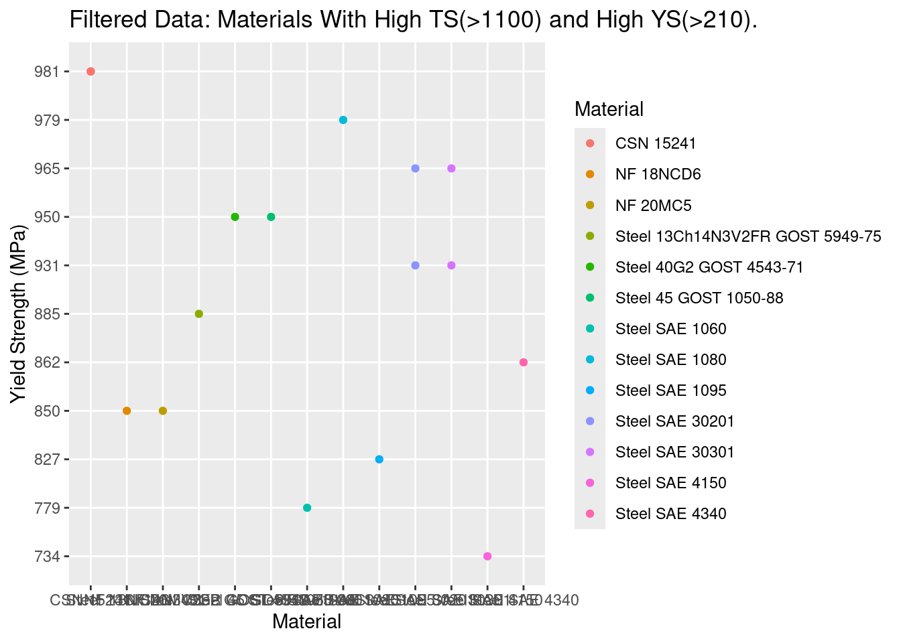

Understanding Materials and their Mechanical Properties.
Question:
Which materials offer the best combination of mechanical properties, making them suitable for heavy-duty industrial applications?
Background
Understanding the mechanical properties of materials is an essential part of being an engineer. The mechanical properties of materials enable engineers to understand the behavioral aspect of a material when forces or loads are applied. This is fundamentally important when examining materials for heavy-duty industrial applications and considering whether they excel in factors such as strength, durability, corrosion resistance, and heat resistance. All factors that determine whether a material is a good choice for a specific sector, such as the automotive manufacturing and aerospace industries. However, when selecting a material, how does an engineer determine which material to choose? This is largely answered by the materials’ properties and their comparison to other materials. Mechanical properties, such as tensile strength, yield strength, hardness, and elasticity, are compared and examined to determine which material exhibits the desired characteristics for a specific project.
Introduction
In this project, we will investigate a data-set of recorded mechanical properties and understand which materials engineers will select when working with heavy-duty industrial applications. In general, we will be looking for materials that will provide a good blend of strength, toughness, and either high stiffness or high flexibility. In ideal analysis we would also analyze materials to include high thermal resistance for hot environments and high corrosion resistance for fluctuating environments. However, given our limited data set, we will investigate the variables that we think are most significant when determining industrial application, this thus includes ultimate tensile strength, yield strength, elongation at break or strain, and elastic modulus.
Predictions
Before comparing the mechanical properties of the provided materials, I predict that steel and cast iron will be the materials that offer a good blend of the desired mechanical properties for heavy-duty industrial applications. They are, for instance, both well known to exhibit high tensile strength, high toughness, and low brittleness. In the case of high strength and high flexibility, I predict aluminum to be a well picked material for industrial use.
Data Source Used
To reveal the materials that offer the best blend of the desired mechanical properties for heavy-duty industrial applications, the data source that will be used is “Materials and Their Mechanical Properties” by Purushottam Nawale on Kaggle. This real-world data set includes the following mechanical properties:
In this project we will be narrowing down mechanical properties of materials by finding ones that will most likely be used for long term strength and durability. We will examine top choices for stiff and flexible materials as well. The data itself was obtained from the Auto desk Material Library. This data set includes data of 1553 different materials, some materials may be the labeled as the same (e.g, steel) but have different carbon content and are therefore different (e.g, Steel SAE 1020).
Tools
To edit this website, R and R Studio was used in Posit.Cloud. Github was used for website hosting.
To create figures in Posit.Cloud I used tidyverse which is a collection of R packages for data science. To read the excel files we used the library readxl.
#Libraries used for this projectlibrary(tidyverse)
── Attaching core tidyverse packages ──────────────────────── tidyverse 2.0.0 ──
✔ dplyr 1.1.4 ✔ readr 2.1.5
✔ forcats 1.0.0 ✔ stringr 1.5.1
✔ ggplot2 3.5.2 ✔ tibble 3.3.0
✔ lubridate 1.9.4 ✔ tidyr 1.3.1
✔ purrr 1.1.0
── Conflicts ────────────────────────────────────────── tidyverse_conflicts() ──
✖ dplyr::filter() masks stats::filter()
✖ dplyr::lag() masks stats::lag()
ℹ Use the conflicted package (<http://conflicted.r-lib.org/>) to force all conflicts to become errors
Given the data-set, I will examine the strength, durability, and compatibility of materials by examining their tensile strength, their yield strength, and elastic modulus. The data will be filtered to meet the demands for hypothetical industrial thresholds, this includes for materials that may require high stiffness or high flexibility.
In terms of high stiffness, I predict that steel will be the top contender for strength and durability, specifically by achieving a ultimate tensile strength of 700 MPa or higher. In terms of flexibility, I predict for aluminum to be a top contender for strength to weight ratio and flexibility for industry deployment. In specifically I expect aluminum to be about 200 MPa in terms of tensile strength.
Results
To first understand the strength distribution for all provided materials, a scatter plot was created measuring the ultimate tensile strength for all materials. This plot will be eventually filtered to accommodate for other mechanical properties that an engineer may look at when choosing for ideal materials to implement in a heavy-duty industrial setting.
# (0) First graph, exploring materials and their Ultimate Tensile Strength (Su) in MPa.# Exploring the maximum stress that material can withstand before breaking or exhibiting permanent deformation."#Plot the tensile plot across all organizations.tensile_plot <-ggplot(data=mydata,mapping =aes(x=Material, y=Su, color=Bhn)) +geom_point() +labs (title ="Tensile Strength Among All Given Materials",x ="Material",y ="Ultimate Tensile Strength (MPA)", )tensile_plot
#printing out the graph as a png.ggsave(filename ="tensile_plot.png", tensile_plot)
Saving 7 x 5 in image
We filtered the data to only show the materials with the highest tensile strength. In this case we wanted only the top choices so we set the limit for the Ultimate Tensile Strength to be greater than 1900 MPa.
#(1) Interested in materials with high tensile strength first.high_tensile_data <- mydata |>filter(Su>1900)#plothigh_tensile_plot <-ggplot (data= high_tensile_data,mapping =aes(x=Material, y=Su, color= Material)) +geom_point() +labs (title ="Filtered Data: Materials With the Highest Ultimate Tensile Strength (UTS>900)",x ="Material",y ="Ultimate Tensile Strength (MPa)", )high_tensile_plot
#printing out the graph as a png.ggsave(filename ="high_tensile_plot.png", high_tensile_plot)
Saving 7 x 5 in image
While maintaining consideration of tensile strength, we also filter materials to have a yield strength over 210 MPa. In this case we want high yield strength, as it allows machinery to be reliable and safe to use after experiencing repetitive use. We don’t want it to deform quickly.
In general, high yield strength can be defined as the stress needed for a material to begin plastic deformation (i.e., permanent deformation).
#(2) Figure out the materials with now, high tensile strength and high yield strength.#High yield strength: Stress needed for a material to begin plastic deformation (permanent deformation).#Filter to have high ultimate tensile strenght and high yield strength (Sy)tensile_yield_data <- mydata |>filter(Su>1100& Sy >210)#plottensile_yield_plot <-ggplot (data= tensile_yield_data,mapping =aes(x=Material, y=Sy, color= Material)) +geom_point() +labs (title ="Filtered Data: Materials With High TS(>1100) and High YS(>210).",x ="Material",y ="Yield Strength (MPa)", )tensile_yield_plot

#printing out the graph as a png.ggsave(filename ="tensile_yield_plot.png", tensile_yield_plot)
Saving 7 x 5 in image
Realistically, an engineer would want a good blend of material properties. In the case for the need of stiff and strong materials, an engineer may opt to materials that may exhibit high ultimate tensile strength, high yield strength, and medium to high elastic modulus.
#(3) Implement to find medium-high elastic modulus (E), i.e. to resist bending and deformation. Cons: Less flexible materials.elastic_data <- tensile_yield_data |>filter(E>150000)#Plotelastic_plot <-ggplot (data= elastic_data,mapping =aes(x=Material, y=E, color= Material)) +geom_point() +labs (title ="Filtered Data: Materials With High TS(>1100), YS(>210), and E(>100,000)",x ="Material",y ="Elastic Modulus (MPa)", )elastic_plot
#printing out the graph as a png.ggsave(filename ="elastic_plot.png", elastic_plot)
Saving 7 x 5 in image
Diving Deeper
Exploring the relationships and trade-offs between the materials and their mechanical properties. How much flexibility can you get in a material while maintaining a strong foundation of strength (i.e., high UTS)?
(1)
# (A) Ultimate Tensile Strength (y) vs Elongation#High Strength vs Ductility#Ductility: how far is a material able to deform permanently under tensile stress before breaking.#Change the excel column name to be used in data designnames(mydata)[names(mydata) =="Heat treatment"] <-"Heat_treatment"strength_elongation_plot <-ggplot (data = mydata,aes(x=A5, y=Su)) +geom_point() +labs (title ="Blank",x ="Elongation at Break or Strain (%)",y ="Ultimate Tensile Strength (MPa)", )strength_elongation_plot
Warning: Removed 206 rows containing missing values or values outside the scale range
(`geom_point()`).
#printing out the graph as a png.ggsave(filename ="strength_elongation_plot.png", strength_elongation_plot)
Saving 7 x 5 in image
Warning: Removed 206 rows containing missing values or values outside the scale range
(`geom_point()`).
#(B) How stiff should a material be while trying to mantain the strength of the material?# UTS (y) vs Elastic Modulus, E (x)#Strength vs Stiffnessstrength_stiffness_plot <-ggplot (data = mydata,aes(x=E, y=Su)) +geom_point() +labs (title ="Strength vs Stiffness",subtitle ="How stiff should a material be to mantain strength?",x ="Elastic Modulus, E (MPa)",y ="Ultimate Tensile Strength (MPa)", )strength_stiffness_plot
#printing out the graph as a png.ggsave(filename ="strength_stiffness_plot.png", strength_stiffness_plot)
Saving 7 x 5 in image
#(B.II) Strength vs Stiffness#Exploring the materials with high strength and high flexibility.#Material ability to bend without permanently deforming.#We filter the previous data to get materials with moderate to high UTS (>500) and high flexiblity (E<50000)filtered_data_h_flexibility <- mydata |>filter(Su>500& E<100000)#Plot the filtered datafiltered_plot_h_flexibility <-ggplot (data = filtered_data_h_flexibility,aes(x=E, y=Su, color=Material)) +geom_point() +labs (title ="Filtered Data: Strength vs Low Stiffness",subtitle ="Mantaining strenght and flexibility.",x ="Elastic Modulus, E (MPa)",y ="Ultimate Tensile Strength (MPa)", )filtered_plot_h_flexibility
#printing out the graph as a png.ggsave(filename ="filtered_plot_h_flexibility.png", filtered_plot_h_flexibility)